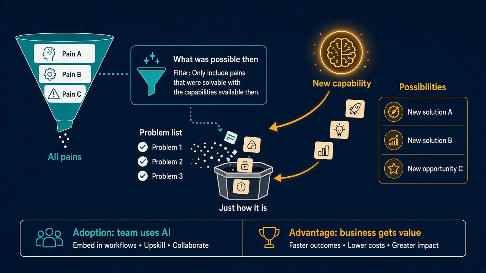

Your problem list was pruned by what used to be possible
Source: Ankyth Shukla (@AnkythShukla), interview on Aakash Gupta’s show, via Aakash Gupta (@aakashgupta)
original post · full episode
What it claims
Product management teaches you to start with the problem, and Shukla argues that is exactly why many AI projects go nowhere. Some things in a company were never filed as problems. People looked at them, decided “that’s just how it is”, and stopped, not because they didn’t hurt but because nothing existed that could fix them. A problem list won’t surface those, because the list was pruned years ago by what was possible then. So the first step of his POWER framework is possibilities: work out what the new capability actually does (he boils AI down to three verbs: understand, transform, generate), then look at competitors, your own industry and the one next door, and keep a running list of what people are pulling off. He also separates adoption (does the team use AI?) from advantage (does the business get anything back?). Many companies solve the first and quietly assume the second followed. And when a CEO says “everything can be done with AI” and the team knows it can’t, the argument is really about what each side believes is possible. Map that first and most of the argument goes away.
Why it matters for a PO
A Product Backlog only holds what someone thought to write down, so accepted pain never shows up in it. Lesson 75 (observe first) and lesson 284 (go to where the work happens) help you find pain people put up with. This lesson adds why that pain stays hidden: the filter was old capability, and it needs re-checking whenever capability changes. It also gives you a cleaner way to report AI work to stakeholders: usage numbers show adoption, not advantage.
3 takeaways
- Problem lists are filtered by past capability. When capability changes, the “just how it is” pile is where new value hides.
- Before discovery, build a possibilities list: what can now be understood, transformed or generated, and what are competitors and adjacent industries already doing with it?
- Report adoption and advantage separately. Usage is not value, and a disagreement about AI is often a disagreement about what’s possible.
Practice this week
In your next refinement or stakeholder session, ask: “What do we put up with here that we stopped complaining about?” Write down five answers without judging them. Next to each, note whether a model could now understand, transform or generate something that changes it. Pick one and turn it into a backlog item with a value hypothesis. For any AI feature you already have, add one line to your status update that states its advantage (time saved, errors avoided, revenue), not just how many people use it.